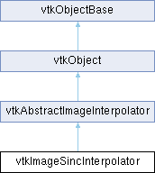

|
Etrek
|
|
Etrek
|
perform sinc interpolation on images More...
#include <vtkImageSincInterpolator.h>

Public Member Functions | |
| vtkTypeMacro (vtkImageSincInterpolator, vtkAbstractImageInterpolator) | |
| void | PrintSelf (ostream &os, vtkIndent indent) override |
| void | SetWindowHalfWidth (int n) |
| int | GetWindowHalfWidth () |
| void | SetUseWindowParameter (int val) |
| void | UseWindowParameterOn () |
| void | UseWindowParameterOff () |
| int | GetUseWindowParameter () |
| void | SetWindowParameter (double param) |
| double | GetWindowParameter () |
| void | ComputeSupportSize (const double matrix[16], int support[3]) override |
| void | SetAntialiasing (int antialiasing) |
| void | AntialiasingOn () |
| void | AntialiasingOff () |
| int | GetAntialiasing () |
| void | SetRenormalization (int renormalization) |
| void | RenormalizationOn () |
| void | RenormalizationOff () |
| int | GetRenormalization () |
| bool | IsSeparable () override |
| void | FreePrecomputedWeights (vtkInterpolationWeights *&weights) override |
| virtual void | SetWindowFunction (int mode) |
| void | SetWindowFunctionToLanczos () |
| void | SetWindowFunctionToKaiser () |
| void | SetWindowFunctionToCosine () |
| void | SetWindowFunctionToHann () |
| void | SetWindowFunctionToHamming () |
| void | SetWindowFunctionToBlackman () |
| void | SetWindowFunctionToBlackmanHarris3 () |
| void | SetWindowFunctionToBlackmanHarris4 () |
| void | SetWindowFunctionToNuttall () |
| void | SetWindowFunctionToBlackmanNuttall3 () |
| void | SetWindowFunctionToBlackmanNuttall4 () |
| int | GetWindowFunction () |
| virtual const char * | GetWindowFunctionAsString () |
| void | SetBlurFactors (double x, double y, double z) |
| void | SetBlurFactors (const double f[3]) |
| void | GetBlurFactors (double f[3]) |
| double * | GetBlurFactors () VTK_SIZEHINT(3) |
| void | PrecomputeWeightsForExtent (const double matrix[16], const int extent[6], int newExtent[6], vtkInterpolationWeights *&weights) override |
| void | PrecomputeWeightsForExtent (const float matrix[16], const int extent[6], int newExtent[6], vtkInterpolationWeights *&weights) override |
| Public Member Functions inherited from vtkAbstractImageInterpolator | |
| vtkTypeMacro (vtkAbstractImageInterpolator, vtkObject) | |
| virtual void | Initialize (vtkDataObject *data) |
| virtual void | ReleaseData () |
| void | DeepCopy (vtkAbstractImageInterpolator *obj) |
| virtual void | Update () |
| double | Interpolate (double x, double y, double z, int component) |
| bool | Interpolate (const double point[3], double *value) |
| void | SetOutValue (double outValue) |
| double | GetOutValue () |
| void | SetTolerance (double tol) |
| double | GetTolerance () |
| void | SetComponentOffset (int offset) |
| int | GetComponentOffset () |
| void | SetComponentCount (int count) |
| int | GetComponentCount () |
| int | ComputeNumberOfComponents (int inputComponents) |
| int | GetNumberOfComponents () |
| void | SetSlidingWindow (bool x) |
| void | SlidingWindowOn () |
| void | SlidingWindowOff () |
| bool | GetSlidingWindow () |
| void | InterpolateIJK (const double point[3], double *value) |
| void | InterpolateIJK (const float point[3], float *value) |
| bool | CheckBoundsIJK (const double x[3]) |
| bool | CheckBoundsIJK (const float x[3]) |
| void | SetBorderMode (vtkImageBorderMode mode) |
| void | SetBorderModeToClamp () |
| void | SetBorderModeToRepeat () |
| void | SetBorderModeToMirror () |
| vtkImageBorderMode | GetBorderMode () |
| const char * | GetBorderModeAsString () |
| void | InterpolateRow (vtkInterpolationWeights *&weights, int xIdx, int yIdx, int zIdx, double *value, int n) |
| void | InterpolateRow (vtkInterpolationWeights *&weights, int xIdx, int yIdx, int zIdx, float *value, int n) |
| vtkGetVector3Macro (Spacing, double) | |
| vtkGetVectorMacro (Direction, double, 9) | |
| vtkGetVector3Macro (Origin, double) | |
| vtkGetVector6Macro (Extent, int) | |
| Public Member Functions inherited from vtkObject | |
| vtkBaseTypeMacro (vtkObject, vtkObjectBase) | |
| virtual void | DebugOn () |
| virtual void | DebugOff () |
| bool | GetDebug () |
| void | SetDebug (bool debugFlag) |
| virtual void | Modified () |
| virtual vtkMTimeType | GetMTime () |
| void | PrintSelf (ostream &os, vtkIndent indent) override |
| void | RemoveObserver (unsigned long tag) |
| void | RemoveObservers (unsigned long event) |
| void | RemoveObservers (const char *event) |
| void | RemoveAllObservers () |
| vtkTypeBool | HasObserver (unsigned long event) |
| vtkTypeBool | HasObserver (const char *event) |
| vtkTypeBool | InvokeEvent (unsigned long event) |
| vtkTypeBool | InvokeEvent (const char *event) |
| std::string | GetObjectDescription () const override |
| unsigned long | AddObserver (unsigned long event, vtkCommand *, float priority=0.0f) |
| unsigned long | AddObserver (const char *event, vtkCommand *, float priority=0.0f) |
| vtkCommand * | GetCommand (unsigned long tag) |
| void | RemoveObserver (vtkCommand *) |
| void | RemoveObservers (unsigned long event, vtkCommand *) |
| void | RemoveObservers (const char *event, vtkCommand *) |
| vtkTypeBool | HasObserver (unsigned long event, vtkCommand *) |
| vtkTypeBool | HasObserver (const char *event, vtkCommand *) |
| template<class U, class T> | |
| unsigned long | AddObserver (unsigned long event, U observer, void(T::*callback)(), float priority=0.0f) |
| template<class U, class T> | |
| unsigned long | AddObserver (unsigned long event, U observer, void(T::*callback)(vtkObject *, unsigned long, void *), float priority=0.0f) |
| template<class U, class T> | |
| unsigned long | AddObserver (unsigned long event, U observer, bool(T::*callback)(vtkObject *, unsigned long, void *), float priority=0.0f) |
| vtkTypeBool | InvokeEvent (unsigned long event, void *callData) |
| vtkTypeBool | InvokeEvent (const char *event, void *callData) |
| virtual void | SetObjectName (const std::string &objectName) |
| virtual std::string | GetObjectName () const |
| Public Member Functions inherited from vtkObjectBase | |
| const char * | GetClassName () const |
| virtual vtkTypeBool | IsA (const char *name) |
| virtual vtkIdType | GetNumberOfGenerationsFromBase (const char *name) |
| virtual void | Delete () |
| virtual void | FastDelete () |
| void | InitializeObjectBase () |
| void | Print (ostream &os) |
| void | Register (vtkObjectBase *o) |
| virtual void | UnRegister (vtkObjectBase *o) |
| int | GetReferenceCount () |
| void | SetReferenceCount (int) |
| bool | GetIsInMemkind () const |
| virtual void | PrintHeader (ostream &os, vtkIndent indent) |
| virtual void | PrintTrailer (ostream &os, vtkIndent indent) |
| virtual bool | UsesGarbageCollector () const |
Static Public Member Functions | |
| static vtkImageSincInterpolator * | New () |
| Static Public Member Functions inherited from vtkObject | |
| static vtkObject * | New () |
| static void | BreakOnError () |
| static void | SetGlobalWarningDisplay (vtkTypeBool val) |
| static void | GlobalWarningDisplayOn () |
| static void | GlobalWarningDisplayOff () |
| static vtkTypeBool | GetGlobalWarningDisplay () |
| Static Public Member Functions inherited from vtkObjectBase | |
| static vtkTypeBool | IsTypeOf (const char *name) |
| static vtkIdType | GetNumberOfGenerationsFromBaseType (const char *name) |
| static vtkObjectBase * | New () |
| static void | SetMemkindDirectory (const char *directoryname) |
| static bool | GetUsingMemkind () |
Protected Member Functions | |
| void | InternalUpdate () override |
| void | InternalDeepCopy (vtkAbstractImageInterpolator *obj) override |
| virtual void | BuildKernelLookupTable () |
| virtual void | FreeKernelLookupTable () |
| void | GetInterpolationFunc (void(**doublefunc)(vtkInterpolationInfo *, const double[3], double *)) override |
| void | GetInterpolationFunc (void(**floatfunc)(vtkInterpolationInfo *, const float[3], float *)) override |
| void | GetRowInterpolationFunc (void(**doublefunc)(vtkInterpolationWeights *, int, int, int, double *, int)) override |
| void | GetRowInterpolationFunc (void(**floatfunc)(vtkInterpolationWeights *, int, int, int, float *, int)) override |
| Protected Member Functions inherited from vtkAbstractImageInterpolator | |
| void | CoordinateToIJK (const double point[3], double ijk[3]) |
| virtual void | GetSlidingWindowFunc (void(**doublefunc)(vtkInterpolationWeights *, int, int, int, double *, int)) |
| virtual void | GetSlidingWindowFunc (void(**floatfunc)(vtkInterpolationWeights *, int, int, int, float *, int)) |
| Protected Member Functions inherited from vtkObject | |
| void | RegisterInternal (vtkObjectBase *, vtkTypeBool check) override |
| void | UnRegisterInternal (vtkObjectBase *, vtkTypeBool check) override |
| void | InternalGrabFocus (vtkCommand *mouseEvents, vtkCommand *keypressEvents=nullptr) |
| void | InternalReleaseFocus () |
| Protected Member Functions inherited from vtkObjectBase | |
| virtual void | ReportReferences (vtkGarbageCollector *) |
| vtkObjectBase (const vtkObjectBase &) | |
| void | operator= (const vtkObjectBase &) |
Protected Attributes | |
| int | WindowFunction |
| int | WindowHalfWidth |
| float * | KernelLookupTable [3] |
| int | KernelSize [3] |
| int | Antialiasing |
| int | Renormalization |
| double | BlurFactors [3] |
| double | LastBlurFactors [3] |
| double | WindowParameter |
| int | UseWindowParameter |
| Protected Attributes inherited from vtkAbstractImageInterpolator | |
| vtkDataArray * | Scalars |
| double | StructuredBoundsDouble [6] |
| float | StructuredBoundsFloat [6] |
| int | Extent [6] |
| double | Spacing [3] |
| double | Direction [9] |
| double | InverseDirection [9] |
| double | Origin [3] |
| double | OutValue |
| double | Tolerance |
| vtkImageBorderMode | BorderMode |
| int | ComponentOffset |
| int | ComponentCount |
| bool | UseDirection |
| bool | SlidingWindow |
| vtkInterpolationInfo * | InterpolationInfo |
| void(* | InterpolationFuncDouble )(vtkInterpolationInfo *info, const double point[3], double *outPtr) |
| void(* | InterpolationFuncFloat )(vtkInterpolationInfo *info, const float point[3], float *outPtr) |
| void(* | RowInterpolationFuncDouble )(vtkInterpolationWeights *weights, int idX, int idY, int idZ, double *outPtr, int n) |
| void(* | RowInterpolationFuncFloat )(vtkInterpolationWeights *weights, int idX, int idY, int idZ, float *outPtr, int n) |
| Protected Attributes inherited from vtkObject | |
| bool | Debug |
| vtkTimeStamp | MTime |
| vtkSubjectHelper * | SubjectHelper |
| std::string | ObjectName |
| Protected Attributes inherited from vtkObjectBase | |
| std::atomic< int32_t > | ReferenceCount |
| vtkWeakPointerBase ** | WeakPointers |
Additional Inherited Members | |
| Static Protected Member Functions inherited from vtkObjectBase | |
| static vtkMallocingFunction | GetCurrentMallocFunction () |
| static vtkReallocingFunction | GetCurrentReallocFunction () |
| static vtkFreeingFunction | GetCurrentFreeFunction () |
| static vtkFreeingFunction | GetAlternateFreeFunction () |
perform sinc interpolation on images
vtkImageSincInterpolator provides various windowed sinc interpolation methods for image data. The default is a five-lobed Lanczos interpolant, with a kernel size of 6. The interpolator can also bandlimit the image, which can be used for antialiasing. The interpolation kernels are evaluated via a lookup table for efficiency.
|
protectedvirtual |
Build the lookup tables used for the interpolation.
|
overridevirtual |
Get the support size for use in computing update extents. If the data will be sampled on a regular grid, then pass a matrix describing the structured coordinate transformation between the output and the input. Otherwise, pass nullptr as the matrix to retrieve the full kernel size.
Implements vtkAbstractImageInterpolator.
|
protectedvirtual |
Free the kernel lookup tables.
|
overridevirtual |
Free the precomputed weights. THIS METHOD IS THREAD SAFE.
Reimplemented from vtkAbstractImageInterpolator.
|
overrideprotectedvirtual |
Get the interpolation functions.
Reimplemented from vtkAbstractImageInterpolator.
|
overrideprotectedvirtual |
Reimplemented from vtkAbstractImageInterpolator.
|
overrideprotectedvirtual |
Get the row interpolation functions.
Reimplemented from vtkAbstractImageInterpolator.
|
overrideprotectedvirtual |
Reimplemented from vtkAbstractImageInterpolator.
|
overrideprotectedvirtual |
Copy the interpolator.
Implements vtkAbstractImageInterpolator.
|
overrideprotectedvirtual |
Update the interpolator.
Implements vtkAbstractImageInterpolator.
|
overridevirtual |
Returns true if the interpolator supports weight precomputation. This will always return true for this interpolator.
Implements vtkAbstractImageInterpolator.
|
overridevirtual |
If the data is going to be sampled on a regular grid, then the interpolation weights can be precomputed. A matrix must be supplied that provides a transformation between the provided extent and the structured coordinates of the input. This matrix must perform only permutations, scales, and translation, i.e. each of the three columns must have only one non-zero value. A new extent is provided for out-of-bounds checks. THIS METHOD IS THREAD SAFE.
Reimplemented from vtkAbstractImageInterpolator.
|
overridevirtual |
Reimplemented from vtkAbstractImageInterpolator.
|
overridevirtual |
Methods invoked by print to print information about the object including superclasses. Typically not called by the user (use Print() instead) but used in the hierarchical print process to combine the output of several classes.
Reimplemented from vtkAbstractImageInterpolator.
| void vtkImageSincInterpolator::SetAntialiasing | ( | int | antialiasing | ) |
Turn on antialiasing. If antialiasing is on, then the BlurFactors will be computed automatically from the output sampling rate such that that the image will be bandlimited to the Nyquist frequency. This is only applicable when the interpolator is being used by a resampling filter like vtkImageReslice. Such a filter will indicate the output sampling by calling the interpolator's ComputeSupportSize() method, which will compute the blur factors at the same time that it computes the support size.
| void vtkImageSincInterpolator::SetBlurFactors | ( | double | x, |
| double | y, | ||
| double | z ) |
Blur the image by widening the windowed sinc kernel by the specified factors for the x, y, and z directions. This reduces the bandwidth by these same factors. If you turn Antialiasing on, then the blur factors will be computed automatically from the output sampling rate. Blurring increases the computation time because the kernel size increases by the blur factor.
| void vtkImageSincInterpolator::SetRenormalization | ( | int | renormalization | ) |
Turn off renormalization. Most of the sinc windows provide kernels for which the weights do not sum to one, and for which the sum depends on the offset. This results in small ripple artifacts in the output. By default, the vtkImageSincInterpolator will renormalize these kernels. This method allows the renormalization to be turned off.
| void vtkImageSincInterpolator::SetUseWindowParameter | ( | int | val | ) |
Turn this on in order to use SetWindowParameter. If it is off, then the default parameter will be used for the window.
|
virtual |
The window function to use. The default is Lanczos, which is very popular and performs well with a kernel width of 6. The Cosine window is included for historical reasons. All other windows are described in AH Nuttall, "Some windows with very good sidelobe behavior," IEEE Transactions on Acoustics, Speech, and Signal Processing 29:84-91, 1981.
| void vtkImageSincInterpolator::SetWindowHalfWidth | ( | int | n | ) |
Set the window half-width, this must be an integer between 1 and 16, with a default value of 3. The kernel size will be twice this value if no blur factors are applied. The total number of sinc lobes will be one less than twice the half-width, so if the half-width is 3 then the kernel size will be 6 and there will be 5 sinc lobes.
| void vtkImageSincInterpolator::SetWindowParameter | ( | double | param | ) |
Set the alpha parameter for the Kaiser window function. This parameter will be ignored unless UseWindowParameter is On. If UseWindowParameter is Off, then alpha is set to be the same as n where n is the window half-width. Using an alpha less than n increases the sharpness and ringing, while using an alpha greater than n increases the blurring.